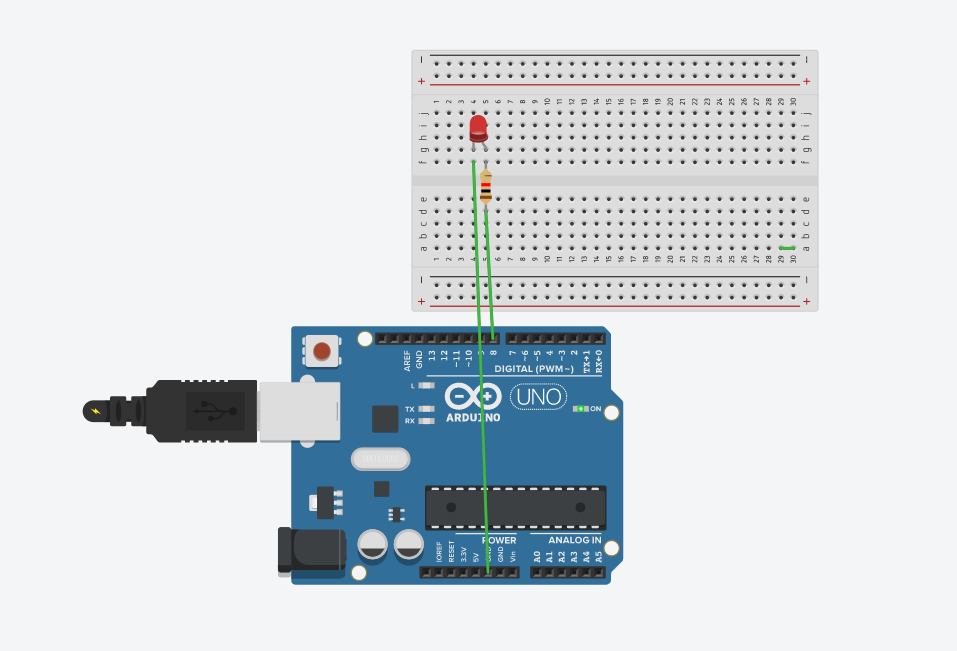
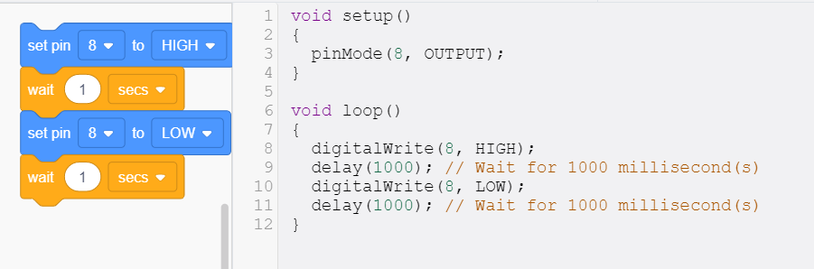
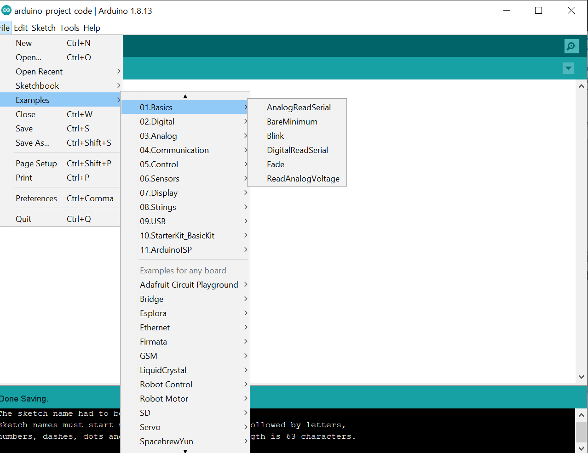
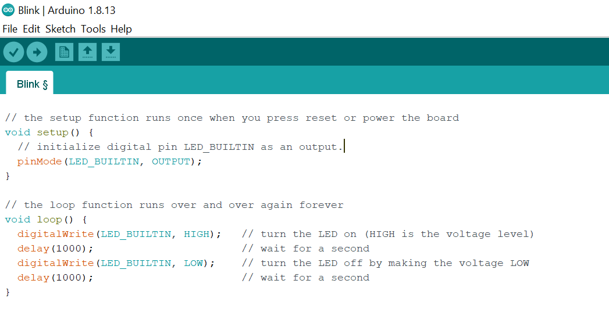
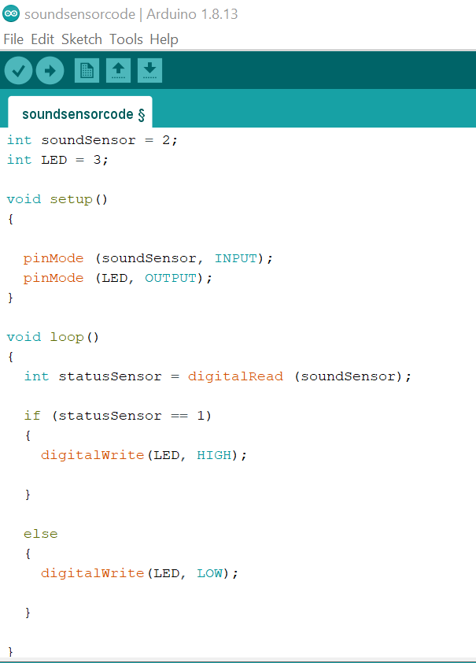
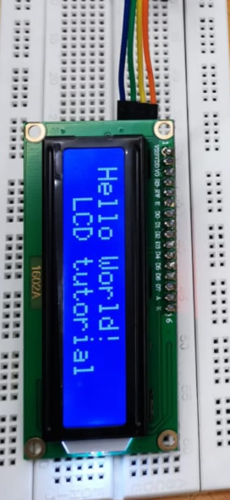
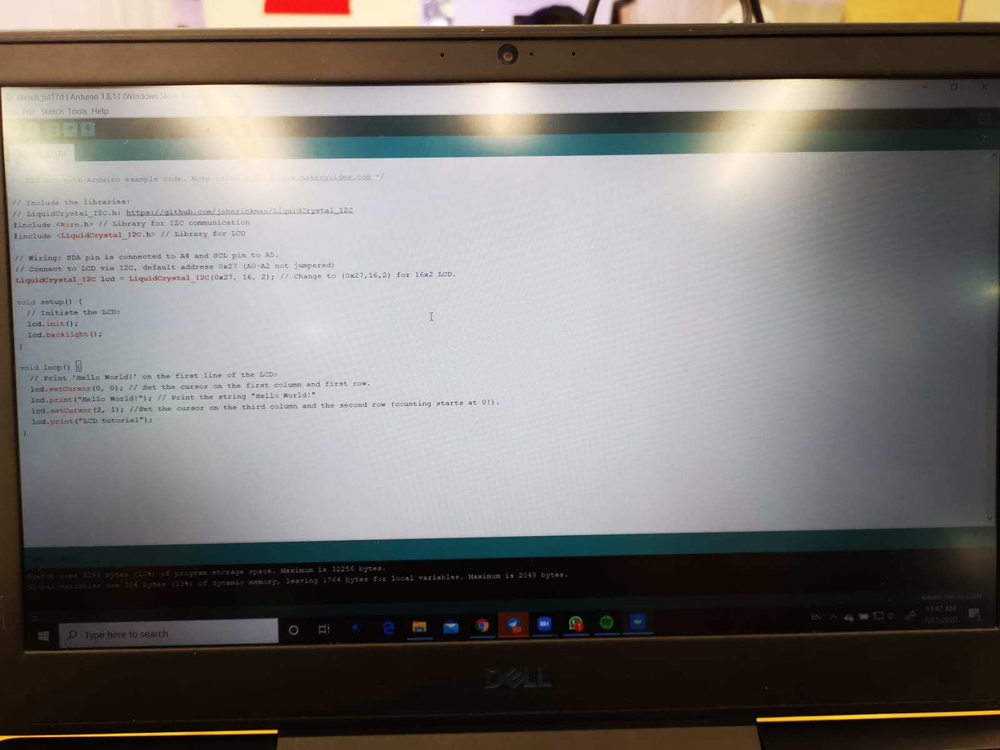
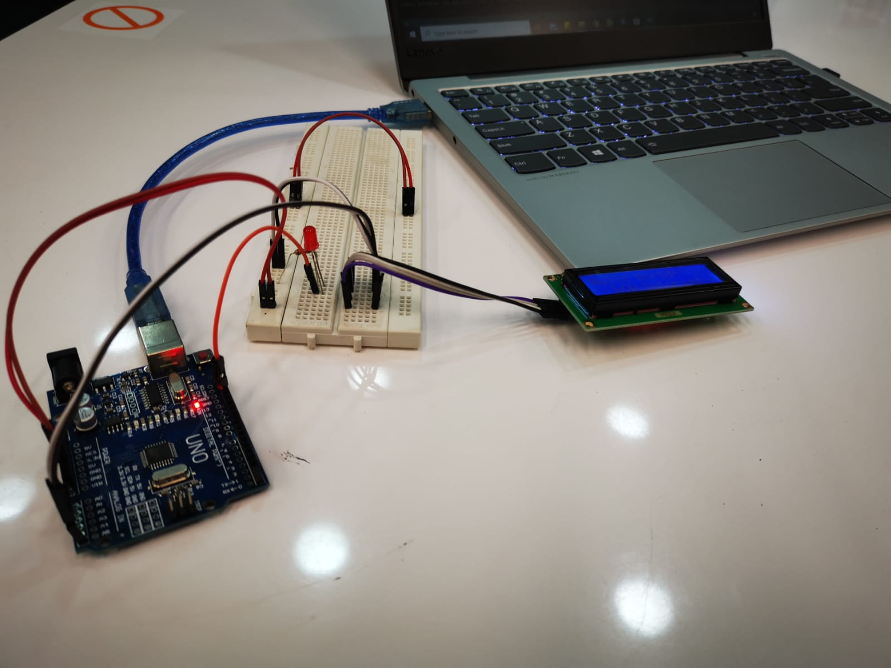

Embedded Programming
Arduino IDE Software
4 simple steps to start programming with Arduino IDE
- 1. Connect your UNO board to the host computer
- 2. Write your code on Arduino IDE
- 3. Compile and upload your completed sketch to UNO board
- 4. Press the reset button
Thinkercad
An online website that allows you to practice creating and designing your arduino circuit virtually without the need to do it hands-on.
Great way to start learning how to do basic coding for your arduino and understand the circuit connections clearly.
Example of a simple circuit programmed with an arduino uno
 Coding on thinkercad is made simpler and easier to understand, the code shown above that i made with the pieces of instructions for 'blinking' can be translated and used on the actual aruduino software.
Coding on arduino IDE
For someone new to coding and still learning about the basics. Arduino IDE provides a list of useful coding examples for us to learn from. Those examples can be found by clicking on the 'File' icon on the top left corner and selecting 'Examples' and simply choose the code that you want to program and follow the instructions given.
I tried the example 'blink' on my ardunio to see if it works. I connected the Red LED bulb onto the built in LED on pin 13 and the other to the ground for a simple testing of the code.
Next, i tried programming the servo motor to rotate at certain angles.
For the 'loop' section, by typing the code myservo.write(), within the parenthesis itself, i can specify the angle i want the servo motor to turn and within the parenthesis of delay(), i can specify it's duration in milliseconds.
Next, with the sound sensor module, i was able to make the LED light bulb blink upon the detection of sound frequency by the sensor module.
Next, i connected the LCD 16x2 display to my arduino uno and programmed it to display words on the screen.
  Now that i've learnt how to program using the arduino software and how to code for the different type of materials used. I will try to incorporate the skills that i have learnt into my final module project.